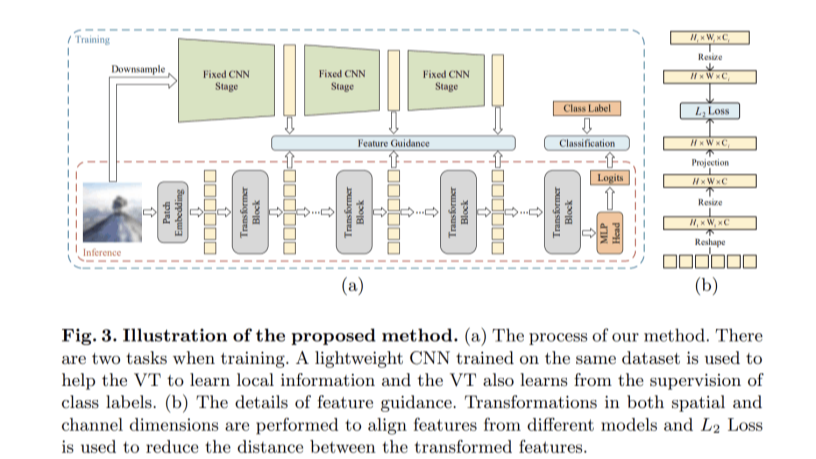

Locality Guidance for Improving Vision Transformers on Tiny Datasets (ECCV 2022)
This paper proposes the locality guidance for improving the performance of VTs on tiny datasets.
See here for Paper and Code.

Joint Learning of Object Graph And Relation Graph For Visual Question Answering (ICME 2022)
This paper introduces
a novel Dual Message-passing enhanced Graph Neural Network.
See here for Paper and Code.
Training-free Transformer Architecture Search (CVPR 2022)
This paper, for the first time, investigates how to conduct TAS in a training-free manner and devise an effective trainingfree TAS scheme.
See here for Paper and Code.